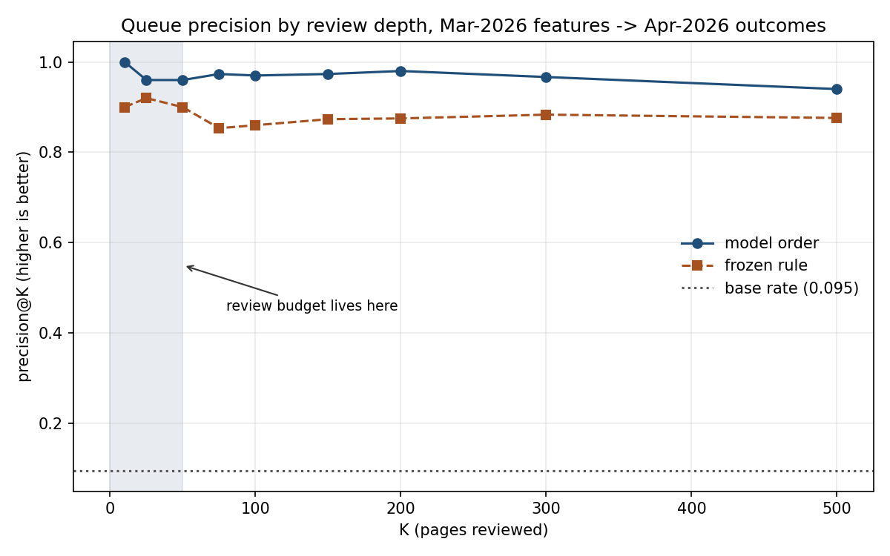
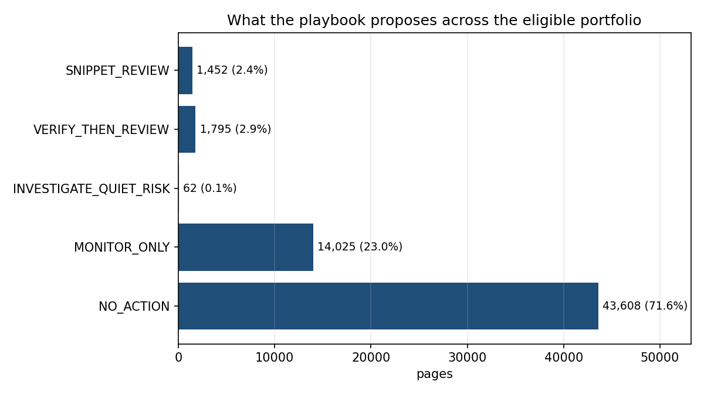

1Abstract
In five lines
- Question
- Of the pages already flagged as under-converting, which will still be under-converting next month — and therefore deserve an editor's hour?
- Data
- 78.8M daily page rows; 60,942 eligible pages across 34 client portfolios; March 2026 features, April 2026 observed outcomes.
- Result
- precision@50 0.96 (model) vs 0.90 (frozen rule) vs 0.095 base rate, on held-out clients and on a month the model was fitted before.
- Decision
- Orders a 50-page monthly review queue; the rule supplies the reason a human can check.
- Biggest limit
- One forward window, and the label is partly a page-size detector by construction.
A content editor can review roughly fifty pages a month against a portfolio of tens of thousands, so the order of the review queue is the entire product. This study defines an observed monthly label — would the frozen Week-4 rule flag this page again next month? — and ranks pages against it using eleven features computed strictly before the decision moment. The metric, precision@50, was fixed before any model was trained.
On 60,942 pages across 34 client portfolios, a Random Forest measured precision@50 of 0.96 under five client-grouped folds and 0.96 again under a stricter time-forward test in which the model was fitted on February→March and applied unchanged to March→April; the frozen rule measured 0.90 and a random queue 0.095. The margin over the rule at K=200 was +0.103 with a 95% bootstrap interval of +0.055 to +0.155, which excludes zero. A separate earlier experiment on a nine-feature configuration measured ROC AUC of 0.909 with a random split against 0.893 with a client-grouped split; the grouped number is the one reported, because it matches how the system would be used.
The work is decision-support: it orders pages worth opening. It does not diagnose what is wrong with a page, and no result here shows that editing a page changes its outcome. Limitations, the audit that produced them, and the exact route to reproduce every number are given below.
2Introduction and problem statement
A page can rank well and still get almost no clicks. It appears in the results, people see it, and they scroll past. Often that means the title and description under-sell what is actually on the page — twenty minutes of an editor's time could fix it.
But a single client may have twenty thousand pages and an editor has an afternoon. So the real question is not "is this page underperforming?" — it is "which pages do I open first?"
A fixed threshold cannot answer that, and this is measurable rather than assumed. A page at position 2 earning 1% is doing badly; a page at position 40 earning 1% is doing well. Applying a flat "flag anything under 1% CTR" rule to this portfolio flags 96.7% of pages — it hands an editor their entire portfolio back, unsorted. What counts as good depends on where you rank, so the comparison has to be computed from the data and re-computed as the data changes.
The decision this supports
One content editor, once a month, choosing roughly fifty pages to open. Because the budget is that small, precision at the head of the queue is the only metric that matters — which is why precision@50 was fixed in Week 4, before any model existed. Choosing a metric after seeing results is how a project accidentally selects whichever number flatters it.
Claims this paper makes
3Data
All work uses the FlyRank ML internship warehouse release, a gated, pseudonymized derivative of production Search Console and Analytics data. Every choice below has its reason in the same sentence.
| Item | Value | Why |
|---|---|---|
| Source release | FlyRank/internship-warehouse |
gated, pseudonymized; no URLs, titles or raw queries exist in it |
| Fact table | fact_content_daily_performance — 78,835,655 rows |
one row per page, per day, per client |
| Dimension | dim_content — 519,606 rows |
page attributes; key tested unique before any join |
| Dimension | dim_clients — 104 rows |
read for history coverage only, never as a feature |
| Feature window | 2026-03-01 → 2026-03-31 | a settled mid-panel month; recent days are still being revised upstream |
| Outcome window | 2026-04-01 → 2026-04-30 | strictly after the decision moment, so it cannot leak |
| Training window | 2026-02 features → 2026-03 outcomes | lets the model be fitted before the evaluated month existed |
| Sealed | 2026-06 | the panel's final month; reserved as the natural future outcome window |
| Unit of analysis | one page-month | the decision is made once per page, not once per page-day |
| Analysis population | 61,881 eligible → 60,942 with outcomes, 34 clients | eligibility below; 939 pages (1.5%) had no readable April data |
Eligibility, and why each rule exists
- ≥ 500 impressions in the window. Measured, not assumed: below 100 impressions a single extra click moves a page's CTR by more than a full percentage point — larger than the entire flagging threshold. Under that floor a CTR gap is not a weak measurement, it is not a measurement.
- ≥ 5 active days. Within-window volatility and momentum are meaningless otherwise.
- A valid position. See the correction below.
What was excluded, and why
| Excluded | Reason |
|---|---|
All 14 GA4-side columns (ga4_*, sessions_*,
scroll_events, ai_*) |
availability is three-valued and tracks the client: among instrumented clients, 93.9% of page-days still carry no GA4 data. A feature built on that encodes instrumentation, not behaviour. |
fact_content_query_90d |
its fixed 90-day window overlaps the outcome window; those columns would contain the label period. |
| Client and content identifiers | grouping keys for validation, never features. Client pooled CTR varies ~10× across the portfolio, so an identifier would let a model recognise the client instead of learning the pattern. |
Product flags (health_score, needs_ctr_fix,
is_quick_win) |
an existing system's answers. Predicting an answer from the inputs that built it is circular. |
| URLs, titles, meta descriptions, raw queries | removed upstream for privacy — which is also why this work can say a page under-converts but never why. |
A data-convention correction worth publishing
264,737 rows (7.3%) carried an average position below 1, which is impossible for a Google result.
The instinct is to filter them as corrupt. Instead the column's provenance was tested: it equals
sum_position / impressions on every row, and Search Console's bulk export
documents sum_position as zero-based, with 1-based position defined as
SUM(sum_position)/SUM(impressions) + 1.
So a page reading 0.06 sits at true position 1.06. The original guard was deleting 452 of the
best-ranked pages in the dataset, silently. A +1 correction is applied everywhere,
and the guard now removes nothing.
4Methodology
4.1 The label — an observed outcome, not an authored proxy
Earlier weeks ranked by ctr_gap_pp, a rule the author defined. Nobody labelled these
pages, so a model trained on it would be learning arithmetic back. The label used here is instead
forward-looking:
label = 1 if the page would STILL be flagged in April
(April gap >= 0.10pp AND April missed clicks >= 10)
label = 0 otherwiseThose are the frozen Week-4 thresholds, applied one month later to what actually happened. It answers the editor's real question: would this have fixed itself? Base rate: 9.5% — about nine in ten flagged problems resolve without intervention, which is precisely why separating them is worth doing.
4.2 The comparison target — the CTR gap
ctr_pp = 100 × clicks / impressions
peer_pp = 100 × (Σ clicks in tier − clicks_i) / (Σ impressions in tier − impressions_i)
ctr_gap_pp = peer_pp − ctr_ppThe peer baseline is leave-one-out — a page is never part of the benchmark it is judged
against — and volume-weighted, so a 500-impression page does not move the benchmark as much
as a 200,000-impression one. Position is averaged as
SUM(sum_position)/SUM(impressions), not as a mean of daily averages, which would give a
3-impression Tuesday the same weight as a 3,000-impression Saturday.
4.3 Features — eleven, all knowable before the decision moment
A feature qualifies only if an editor could have known it on the morning of 2026-04-01 and knowing it does not hand back the answer. Knowability is necessary, not sufficient.
| Group | Features |
|---|---|
| Traffic shape | log_impressions, active_days,
position_volatility, top_day_share, momentum_log |
| Within-client scale | impressions_share_of_client — the page's share of
its own site's traffic, because a 10× spread across clients makes absolute size less
meaningful than relative size |
| Page attributes | log_word_count, content_meta_missing,
two one-hot content-type columns |
| Prior-window outcome | gap_pp, ctr_pp,
log_clicks — legal here because the label moved to April |
dim_content join
covered 100% of eligible pages, yet 20.3% of those rows carried no word count. Because
the missingness was flagged rather than silently imputed, it could be measured — and
content_meta_missing ranked as the second-strongest feature by rank correlation with the
target, ahead of six real measurements. "We do not know how long this page is" carries signal. A
silent median fill would have destroyed it.4.4 Leakage — treated as a method, not an apology
Three boundaries, each checked in code rather than asserted in prose:
- Timeline. Last feature date 2026-03-31 < first outcome date 2026-04-01. April impressions are not in the label formula and are excluded anyway — being innocent is not the same as being on the right side of the line.
- Groups. No client appears in both sides of any fold, asserted with a set-disjointness check on all five folds.
- Names. No outcome-month column, product flag, identifier, or context-only column appears in the feature list.
clicks to the same-window proxy moved the score from 0.167 to 0.902; and
(b) deliberately injecting April impressions — an outcome-month column — into the final feature set
moved ROC AUC by +0.054. The detector fires. An all-clear from it therefore means
something.4.5 Validation — two separate honesty problems
Time is solved by construction: features end 03-31, outcomes start 04-01, the decision
moment sits between. Groups are solved by the split: GroupKFold(5) on client, all
metrics out-of-fold.
And the stricter test — the model was fitted on February→March and applied to March→April unchanged, with no refitting and no threshold tuning. That is what deployment looks like: you fit on what you had, and the next month arrives whether you are ready or not. Between fitting and use, the base rate moved from 0.119 to 0.095, and four of the 34 evaluated clients had never been seen in training.
4.6 Reproducibility caveat found by re-running
With seeds fixed and n_jobs=1, two runs still differed. The source query had no
ORDER BY, and DuckDB does not guarantee row order across parallel Parquet reads; Random
Forest bootstraps rows by index, so a different sequence builds slightly different trees.
Pinning the order fixed the instability — and moved an earlier headline from precision@50 = 1.00 to
0.96. The lower, stable number is the one reported. "Perfect at the top fifty" was partly an
artifact of row ordering, and that was only discoverable by re-running rather than quoting.
5Results
Every row below is scored on the same 60,942 pages, the same folds, the same metric, the same K, and the same tie policy (score descending, exact ties broken by a seeded jitter; exactly one row shared the precision@50 cutoff). The base rate sits beside every number, because precision@50 of 0.90 means nothing until you know whether guessing returns 0.65 or 0.095.
| Ranking method | precision@50 | precision@200 | ROC AUC | lift@50 |
|---|---|---|---|---|
| Random ordering floor | 0.04 | 0.060 | 0.500 | 0.4× |
| Flat "CTR < 1%" rule | flags 96.7% of the portfolio — rejected, see §2 | |||
| Frozen Week-4 rule baseline | 0.90 | 0.875 | 0.864 | 9.5× |
| Logistic Regression, shape features | 0.48 | 0.385 | 0.878 | 5.1× |
| Random Forest, shape features only | 0.90 | 0.845 | 0.881 | 9.5× |
| Random Forest, grouped CV (same month) | 0.96 | 0.975 | 0.921 | 10.1× |
| Random Forest, time-forward (fitted Feb→Mar, applied unchanged) | 0.96 | 0.980 | 0.925 | 10.1× |
Base rate = 0.095. The random row is shown separately because it is not a trained method. The Logistic Regression row is a baseline that was rejected, and it is kept visible on purpose: a paper that shows only the baselines it beat invites the question of what it hid.
Is the margin real?
Resampling the rows 500 times and re-measuring, the time-forward model's margin over the frozen rule at K=200 was +0.103, with a 95% interval of +0.055 to +0.155. The interval excludes zero, so on this evidence the difference is unlikely to be resampling noise. Across the five client-grouped folds the model was ahead in 5 of 5, with margins from +0.04 to +0.16 — so the pooled number is not hiding a flip. One fold contains a single client holding 23% of the rows, so the five folds are not five equally-informative exams.

What the model leans on
Permutation importance, measured by shuffling one column at a time on held-out clients:
log_impressions at 0.124 drop in AUC, then gap_pp at 0.039, then a long
tail. One feature towering over the rest is the classic leakage symptom — so it was investigated
rather than celebrated, and the explanation is structural rather than temporal (see Claim 3 and
§6).
Where the model is wrong
- By position band: ROC AUC 0.90–0.94 across every band including positions 1–2, where an earlier audit showed the peer comparison is unfair. Predictability survived there even though fairness did not.
- By page size: AUC 0.725 for pages under 1,000 impressions against 0.919 above 20,000 — weakest exactly where the base rate is near zero.
- By client: AUC from 0.600 to 0.990, median 0.932. It does not work equally well for everyone.
- The confident errors have a pattern. Two of the three most confident mistakes were pages whose April traffic fell by more than half: 21,225 → 4,733 and 14,172 → 3,574 impressions. Their gaps stopped clearing the threshold because demand left, not because anything improved. The label cannot separate "fixed" from "died." No metric revealed this; reading individual rows did.
6Limitations and honest framing
Each limitation below attaches to a specific claim rather than serving as a general disclaimer.
| Limitation | Which claim it bounds |
|---|---|
| One forward window. Exactly one train-then-deploy transition was evaluated. A backtest repeats this across many decision moments. | Claim 1 |
| The label is size-influenced by construction. The ≥10-missed-clicks gate takes the positive rate from 0.4% to 47.1% across volume bands. Ranking by size alone reaches 0.42 and by gap alone 0.50, so neither explains 0.96 — but the exam is easier than it looks. | Claim 3 |
| The label cannot distinguish recovery from collapse. A page whose traffic dies stops clearing the threshold and is scored as resolved. | Claim 1 |
| Survivor selection, disclosed. 939 pages (1.5%) with no readable April data were excluded — outcome-window information used to define the population. They may be the ones that failed hardest. | Claims 1, 3 |
| The peer comparison fails at positions 1–2. Pages ranking 1–2 pool to 0.118% CTR against 0.394% at positions 3–5, with 35% taking zero clicks. Every client tested reproduced it internally (5 of 5, ratios 1.7× to 18.2×), so it is not one client and not a few large pages. Those pages are routed to investigation, never to a rewrite instruction. | Claim 1 |
| Clients differ by roughly 10×. Pooled CTR runs 0.115% to 1.159% across the 23 clients large enough to measure, against a single global baseline of 0.295%. | Claim 2 |
No calibration. The output column is named model_score, not confidence:
calibration was never evaluated, so 0.8 does not mean an 80% chance. | Claim 1 |
| One unresolved measurement question. Pooled CTR runs ≈0.3% across every position tier here. The reference portfolio's published median CTR is 0.13%, so this is consistent with the data family — but the absolute level is reported without a settled explanation rather than quietly normalised. | all |
| No causal evidence, and none is available. No page was edited as an experiment and no control group exists. | all |
7Ranked recommendations
The design principle: the frozen rule supplies the reason, the model supplies the order. They do different jobs. The rule is arithmetic a person can check — "CTR 0.09% against peers at 0.34%, a gap of 0.25pp worth about 45 clicks a month." The model is a probability nobody can interrogate, but it sorts better at the head of the queue. An editor needs both.

Recommendation 1 · 1,452 pages (2.4%)
Snippet review
Finding. The page's CTR sits measurably below pages at a similar position, and the shortfall is worth at least ten clicks a month.
Action. Read the title and meta description against the page and the query intent.
Measure. CTR at a comparable position six weeks after the change, against pages in the same tier that were not touched.
Recommendation 2 · 1,795 pages (2.9%)
Verify, then review
Finding. The page is flagged, but more than 30% of its month arrived on one day, or its traffic swung by more than 20× between half-months.
Action. Confirm it is not a tracking or campaign artefact first. A broken tag looks exactly like a broken snippet.
Measure. Whether the anomaly persists once the spike day is excluded.
Recommendation 3 · 14,025 pages (23.0%)
Monitor only
Finding. Impressions are rising durably.
Action. Watch it. A page gaining traffic is not a page to rewrite.
Measure. Whether the rise holds for two more months.
Recommendation 4 · 62 pages (0.1%)
Investigate quiet risk
Finding. The model ranks the page highly, but the rule returns no flag — or the page ranks at position 1–2, where the peer comparison was shown to be unfair.
Action. A person looks. A high score with no stated reason is a question, not an instruction.
Measure. How often investigation finds a nameable cause. If it rarely does, the rule needs a new reason code — or this bucket should shrink.
The no-go list, with enforcement status
A policy without a status is decoration, so each says where it is actually enforced.
| Policy | Status |
|---|---|
| Thin-history pages are never queued | Upstream data contract |
| Below-floor pages are never queued | Upstream data contract |
| Durable risers are monitor-only | Asserted 0 violations |
| Swings above 20× go to verification first | Asserted 0 violations |
| Positions 1–2 never get a straight rewrite instruction | Asserted 0 violations |
| 90-day cooldown on recently optimised pages | Asserted see below |
dim_content.last_optimized_date. Implementing it found 31,575 pages optimised
within 90 days of the decision moment, of which 4,383 were headed for a rewrite instruction on a
page somebody had just rewritten. The hole is disclosed too: 29,367 pages (48.2%) have no
optimisation date at all and pass the gate by default — including the entire visible top of the
queue, which is where it matters most.Monitoring, and a policy corrected by its own first run
Monitoring has two clocks. Pre-release checks (population, schema, feature drift) need no labels. Post-label checks (base rate, model vs rule) arrive only after the outcome month closes — so a shift is always discovered one cycle late, and can change the next queue but never the one already sent.
Running the proposed thresholds produced two pre-release alarms and a diagnosis:
active_days drift of PSI 2.11 and a +32.7% population change. February has 28 days
and March has 31. Median active days moved 28 → 31; the feature cannot exceed 28 in training and
can reach 31 in scoring. Fewer pages clear a 500-impression floor in a shorter month, so the
population grows going into a longer one.
active_days by
days-in-month, and compare population against the same calendar month a year earlier rather than the
month before. As originally written, the policy would have alarmed on every February→March
transition for reasons unrelated to model health — and a monitor that cries wolf on the calendar gets
ignored by month three.The fallback policy turns the cost/value question into a rule: if the model trails the frozen rule for two consecutive labeled months, revert to the rule. Complexity must keep proving it is useful.
Value, as derived arithmetic with its assumptions visible
In a 50-page review batch, of pages whose gap persisted into the following month:
| Random ordering | ≈ 4.7 pages |
| Frozen rule | ≈ 45 pages |
| Model order | ≈ 48 pages |
Cost: 50 reviews × ~20 minutes ≈ 17 editor-hours per month. Assumptions: this is a descriptive scenario from one evaluated window, not expected future impact. It assumes a page could reach its position peers' CTR — no experiment here tests that — and it makes no claim about traffic recovery.
And the honest question: would a plain rule create most of the value with less risk? Largely yes — the rule finds 45 of the 48. The model's contribution is the last three pages, and it costs a fitted artefact that must be monitored and retrained. That is why the fallback policy above exists.
Never automated: no automatic rewriting; no automatic client-facing reporting; no treating
model_score as a probability; no acting on an investigation item as if it were a review
instruction.
8Reproducibility
Not "code available" — a route. Every number on this page traces to a notebook and a committed receipt.
Environment and controls
- Runtime: Google Colab, Python 3.12.
duckdb(HTTPFS extension),scikit-learn,pandas,numpy,scipy,matplotlib. Exact versions are printed by the first cell of every notebook. - Seeds:
SEED = 42controls the Random Forest fit, theGroupKFold/GroupShuffleSplitassignment, the bootstrap resampling, and the tie-break jitter.n_jobs=1everywhere, because parallel accumulation reorders floating-point sums. - Row order: every source query carries
ORDER BY client_hash_id, content_hash_id— see §4.6 for why this is not optional. - Data access: the release is gated; a Hugging Face read token is supplied via an environment variable or Colab secret and never appears in any committed file.
Result-to-notebook map
| This page | Produced by | Receipt |
|---|---|---|
| §3 data contract, position correction, GA4 exclusion | w03_data_contract.ipynb | ml04_data_contract_receipts.json |
| §4.3 features, §4.4 leakage controls | w03_feature_leakage_check.ipynb | ml05_feature_vector_receipts.json |
| §6 client spread, positions 1–2 decomposition | w04_signal_audit.ipynb | ml06_signal_audit_receipts.json |
| §5 frozen-rule baseline row | w04_baseline_score.ipynb | ml07_baseline_receipts.json |
| §5 results table, permutation importance, error analysis | w05_model.ipynb | ml08_model_receipts.json |
| §4.5 time-forward test, §4.6 order finding, sabotage test | w06_validation_audit.ipynb | ml09_validation_audit_receipts.json |
| §7 recommendations, Figures 1–2, cooldown, monitoring | w07_action_playbook.ipynb | ml10_playbook_receipts.json |
| This page, assembled | capstone.ipynb | — |
Rerun from a fresh clone
git clone https://github.com/widadfatimakhan/flyrank-internship-ml
# open work/notebooks/<notebook>.ipynb in Colab
# add HF_TOKEN as a Colab secret (read scope)
# Runtime -> Run allEach weekly notebook runs standalone from source rather than importing the previous week's output. Two of them assert their reproduction against the committed receipt before doing anything else, and stop if it does not match.
References
- Google Search Console bulk data export schema — definition of
sum_positionas zero-based and the+1convention for 1-based average position. developers.google.com (used in §3). - FlyRank, The State of AI-Driven SEO, March 2026 — portfolio-level reference figures including median CTR and position-tier click capture (used in §6).
- Nielsen, J. — concise, scannable, objective web writing measured 124% higher usability than promotional prose; the basis for this page's short paragraphs and scannable structure.
- DuckDB documentation — Parquet scanning over HTTP and ordering guarantees (used in §4.6).
9Acknowledgments and data credit
Built on the FlyRank ML Internship dataset — a gated, pseudonymized release derived from production Search Console and Analytics data (https://flyrank.ai).
Thanks to the FlyRank ML internship team for the weekly sessions on data contracts, signal auditing, honest baselines, grouped and time-aware validation, leakage auditing, and claim discipline. The frameworks used here — the comparison contract, the claim ladder, and the observed / measured / directional / decision-support vocabulary — come from that programme.
Data credit thanks the source; it does not replace citation. Sources used for specific claims are cited beside those claims in §8.
No client names, URLs, page titles, or raw search queries appear anywhere in this paper or in the underlying repository. All identifiers are pseudonymous hashes, used for grouping and validation only.